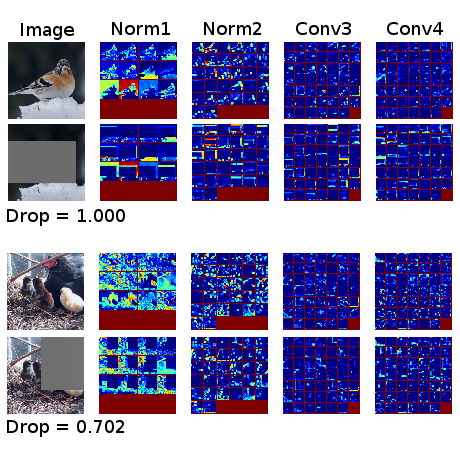

Self-taught Object Localization with Deep Networks

Self-taught Object Localization with Deep Networks
L. Bazzani, A. Bergamo, D. Anguelov, L. Torresani
In IEEE Winter Conference on Applications of Computer Vision (WACV), 2016
STL code / arXiv / bibtex We leverage deep convolutional networks trained for whole-image recognition to localize objects in images without additional human supervision.
L. Bazzani, A. Bergamo, D. Anguelov, L. Torresani
In IEEE Winter Conference on Applications of Computer Vision (WACV), 2016
STL code / arXiv / bibtex We leverage deep convolutional networks trained for whole-image recognition to localize objects in images without additional human supervision.
Details
This paper introduces self-taught object localization, a novel approach that leverages deep convolutional networks trained for whole-image recognition to localize objects in images without additional human supervision, i.e., without using any ground-truth bounding boxes for training. The key idea is to analyze the change in the recognition scores when artificially masking out different regions of the image. The masking out of a region that includes the object typically causes a significant drop in recognition score. This idea is embedded into an agglomerative clustering technique that generates self-taught localization hypotheses. Our object localization scheme outperforms existing proposal methods in both precision and recall for small number of subwindow proposals (e.g., on ILSVRC-2012 it produces a relative gain of 23.4% over the state-of-the-art for top-1 hypothesis). Furthermore, our experiments show that the annotations automatically-generated by our method can be used to train object detectors yielding recognition results remarkably close to those obtained by training on manually-annotated bounding boxes.

Download STL
(link to github)See the instructions in the README.md file.